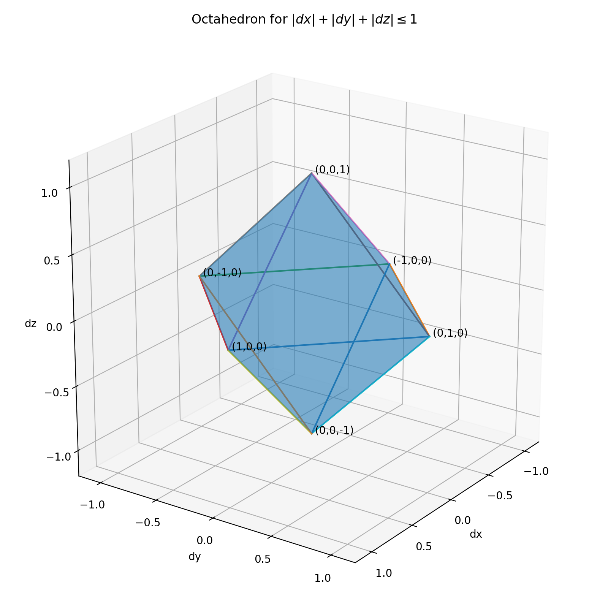
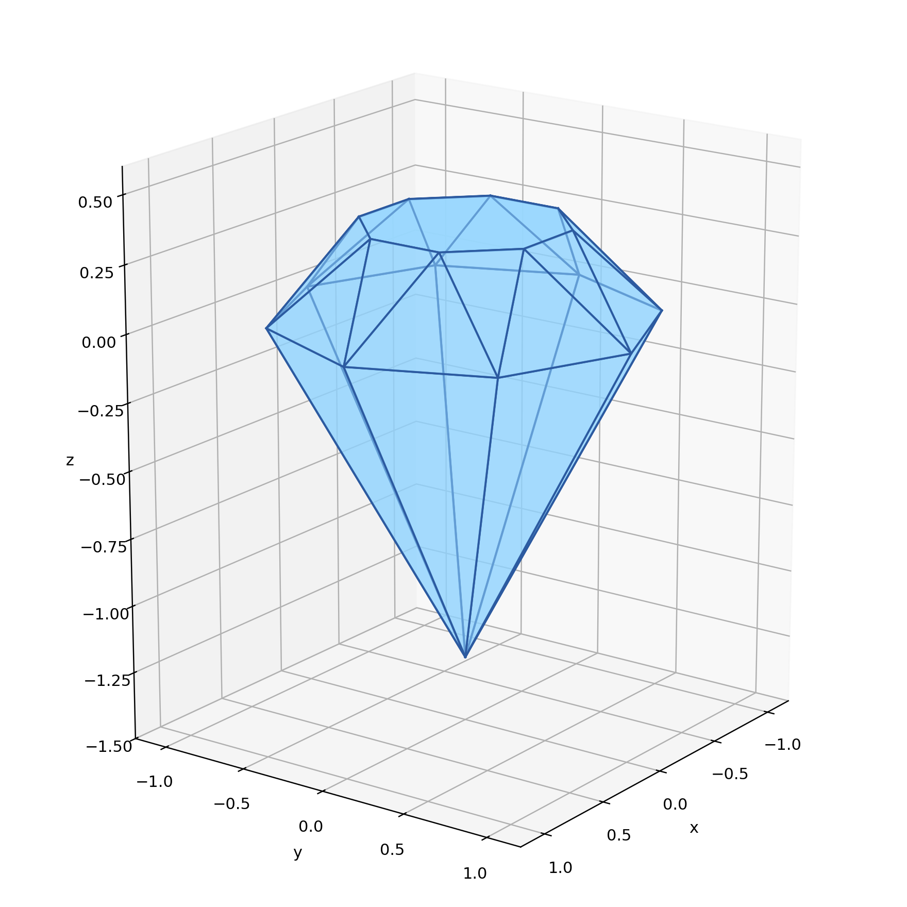

Compilers have a boring public life. Their input is text, their output is text, and the process is usually hidden behind a command line. Internally, though, they deal with much richer objects. In this post I want to advertise those that I particularly like: the shapes that compilers draw from the possible values of program variables.
Before a program runs, a compiler can still learn a great deal about what's possible in a run, which is extremely useful for optimizing the program. It may not be able to know the exact values of a variable x without running the program, but it may learn that x is always odd, that it is positive, or, in the kind of analysis that we're talking about, that it lies within some range. As more variables are considered at once, these ranges turn into lines, areas, and eventually three-dimensional shapes.
Consider a small movement rule for a game:
dx = input.x
dy = input.y
dz = input.z
if abs(dx) + abs(dy) + abs(dz) <= 1:
position.x += dx
position.y += dy
position.z += dzThe rule gives each step a fixed movement budget. Moving in x uses part of the budget, so there is less left for y and z. At the line where the position is updated, the possible values of the three variables are exactly the triples accepted by the condition:
|dx| + |dy| + |dz| <= 1That condition makes a 3-dimensional solid. More concretely an octahedron with six corners, eight triangular faces, one point on each positive and negative axis. And it looks like a simple cut gemstone:

The faces of the gemstone are linear inequalities. One face comes from dx + dy + dz <= 1, another from dx + dy - dz <= 1, another from dx - dy + dz <= 1, and so on through the possible choices of signs. The branch condition in the program has become a polyhedron.
This is the setting of polyhedral analysis. It works with program facts made from linear expressions: i < n, i + j <= len, used + free == capacity. These facts show up around counters, lengths, offsets, capacities, and budgets, because many program quantities are updated and compared by adding or subtracting.
The analysis keeps these facts as a collection of linear inequalities. That choice is what makes the shapes convex, and it is a practical choice: linear constraints are useful enough to express many relationships in programs, and simple enough to compute with as the program passes through branches and loops. Of course, the cost is that the analysis cannot draw every actual strange shape. Separate cases get covered by one larger shape, inconvenient conditions get replaced by something that is more easily expressible.
So polyhedral analysis has a literal name. It is a way for a compiler to learn facts about a program by producing and transforming polyhedra.
Here is a small binary perceptron. It has three weights and processes two observations derived from four binary inputs. When an observation is classified incorrectly, the usual perceptron update adjusts the weights:
def fit(a, b, c, d, label):
assert (
a in [-1, 1]
and b in [-1, 1]
and c in [-1, 1]
and d in [-1, 1]
and label in [-1, 1]
)
weights = [0, 0, -8]
observations = (
(
a + 3*b + 3*c + d,
3*a + b - c - 3*d,
3,
),
(
-a + c + 2*d,
a + 2*b + c,
1,
),
)
for observation in observations:
margin = label * sum(
weight * feature
for weight, feature in zip(weights, observation)
)
if margin <= 0:
weights = [
weight + label * feature
for weight, feature in zip(weights, observation)
]
return tuple(weights)
Do you notice anything suspicious about this program?
Is there a feeling that it tries to hide something?
Let's try to see what is the shape of weights in this example.
revealThe convex hull of the three values in weights is exactly this polyhedron:

Across all values permitted by the assertions, its executions finish in seventeen extreme states. One is the bottom point. Eight form the wide middle of the gemstone, while another eight form the smaller, rotated ring around its crown.
A reading map for polyhedral analysis and the abstract domains behind it.
graphite.cc and graphite-sese-to-poly.cc.
The actual compiler code.
graphite.cc begins with the very directly: "Gimple Represented as Polyhedra"
and implements the pass that converts "GIMPLE" into GCC's GRAPHITE representation.
One caveat: GCC GRAPHITE uses the polyhedral model for loop iteration domains, dependences, schedules, and transformations.
This is adjacent to, but not identical with, the convex-polyhedra abstract domain used to infer arbitrary numerical invariants in this article.
The best single entry point for the material in this article. Miné covers intervals, octagons, polyhedra, and domain combiners in a self-contained tutorial, starting from concrete semantics and building up to the abstractions that make analyses like the one described here possible. A reader who wants to understand what a compiler is actually doing when it "draws shapes" should start here.
doi:10.1561/2500000034The foundational paper for all of abstract interpretation. Cousot and Cousot introduce the idea that program properties can be computed by working in a simplified lattice and approximating the concrete semantics. Everything in this article — the shapes, the convex hulls, the trade-offs between precision and cost — is an instance of the framework this paper establishes.
author page
The octagon domain restricts the permitted linear inequalities to those of the form ±x ± y ≤ c.
This restriction trades expressiveness for significantly cheaper operations,
making octagons a practical middle ground between intervals (which cannot relate variables at all)
and full convex polyhedra.
The paper is useful here because it shows the domain hierarchy that polyhedra sit at the top of.
APRON provides a common C interface to several numerical abstract domains — intervals, octagons, polyhedra, zonotopes — so that changing the domain in a static analyzer is a one-line change. It is the practical demonstration that the shapes discussed in this article are not just theoretical objects: they are interchangeable analysis components that real tools plug in and out.
project pageThe Parma Polyhedra Library (PPL) is a mature Free Software implementation of convex polyhedra and related numerical abstractions. It uses exact integer arithmetic, supports open and closed constraints, and provides parametric integer programming. If you want to see what a production-quality polyhedral library looks like from the inside, this paper and the accompanying manual are the place to start.
PDFisl is the C library that GCC and LLVM use for manipulating integer sets and relations bounded by affine constraints. It provides the polyhedral compilation primitives — dependence analysis, schedule trees, AST generation — that turn the abstract shapes of this article into concrete loop transformations. The manual is dense but precise, and the library is the real engine behind the polyhedral model in production compilers.
manualThe conceptual companion to the GCC source code. This GCC Summit paper explains the design of the GRAPHITE framework: how GIMPLE is converted into polyhedral representations of loop nests, how dependences and schedules are expressed as constraints, and what loop transformations the framework enables. It is the paper to read when you want to understand the compiler-pass architecture that the source code implements.
GCC Summit proceedings (PDF)return home